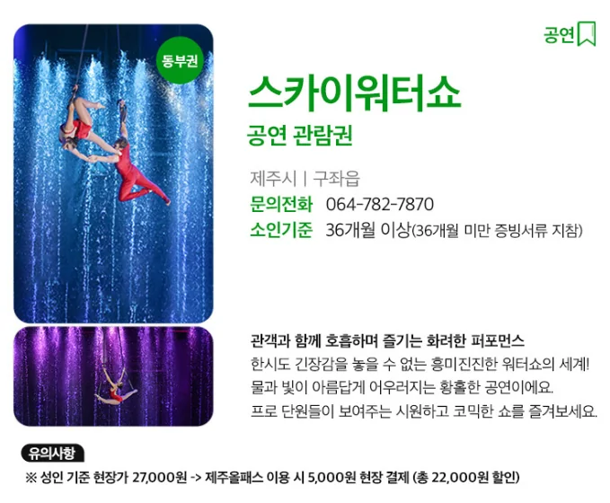
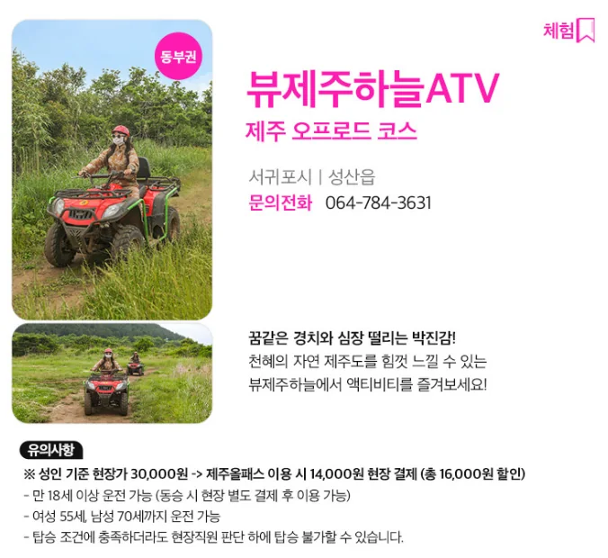
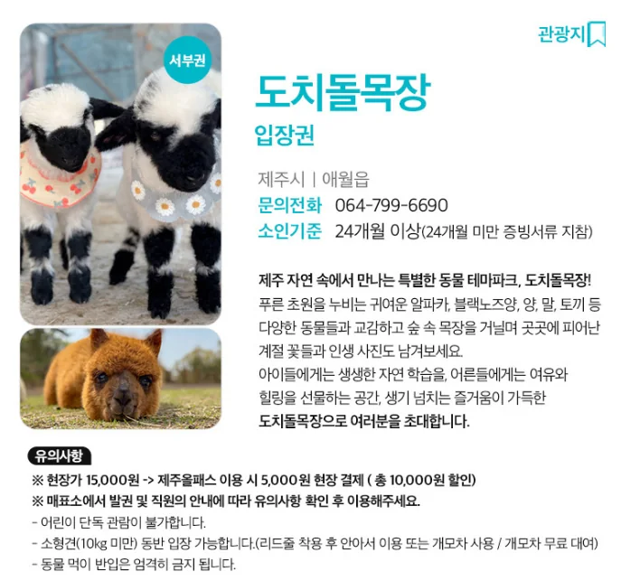
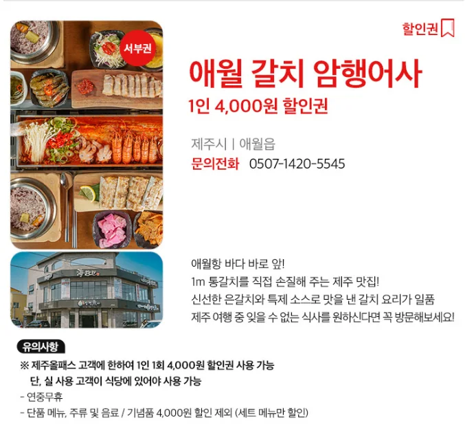
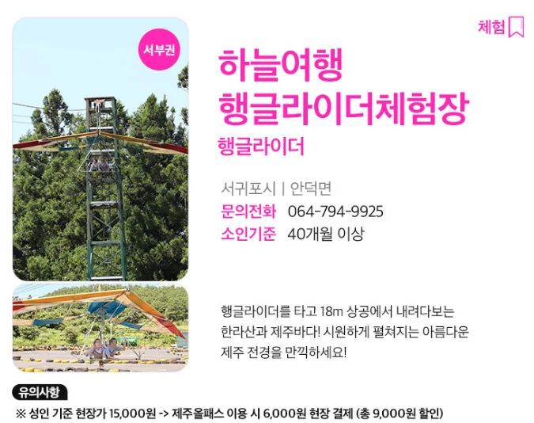
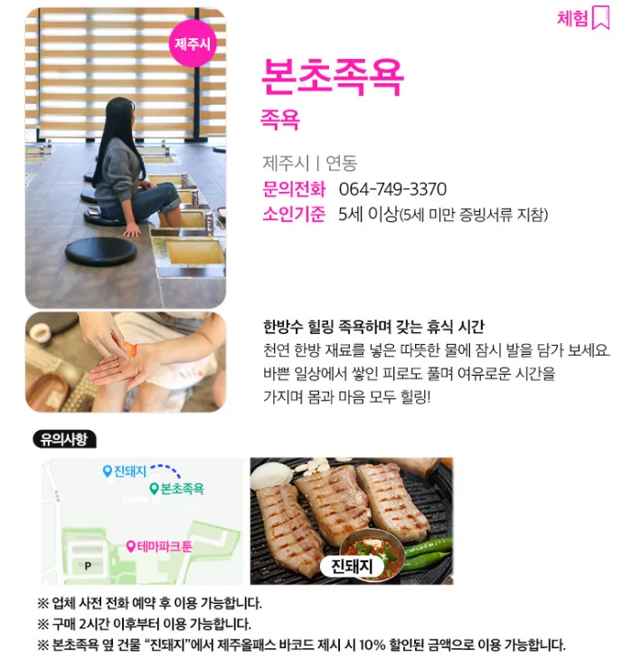
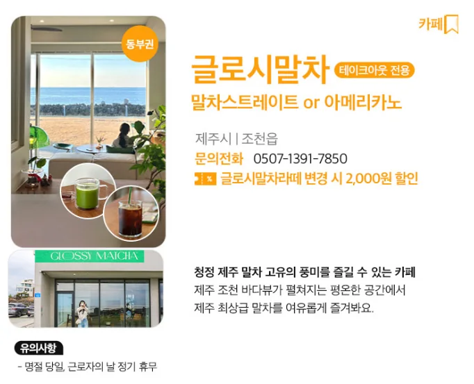
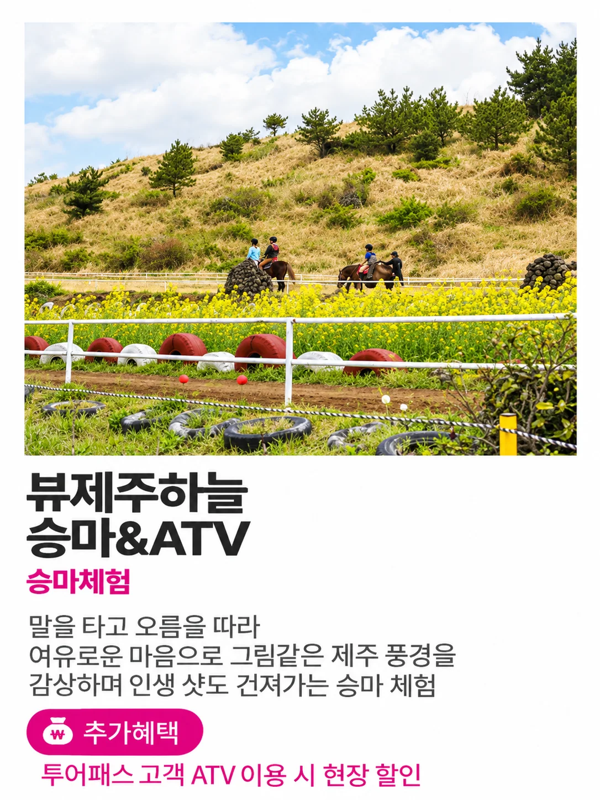
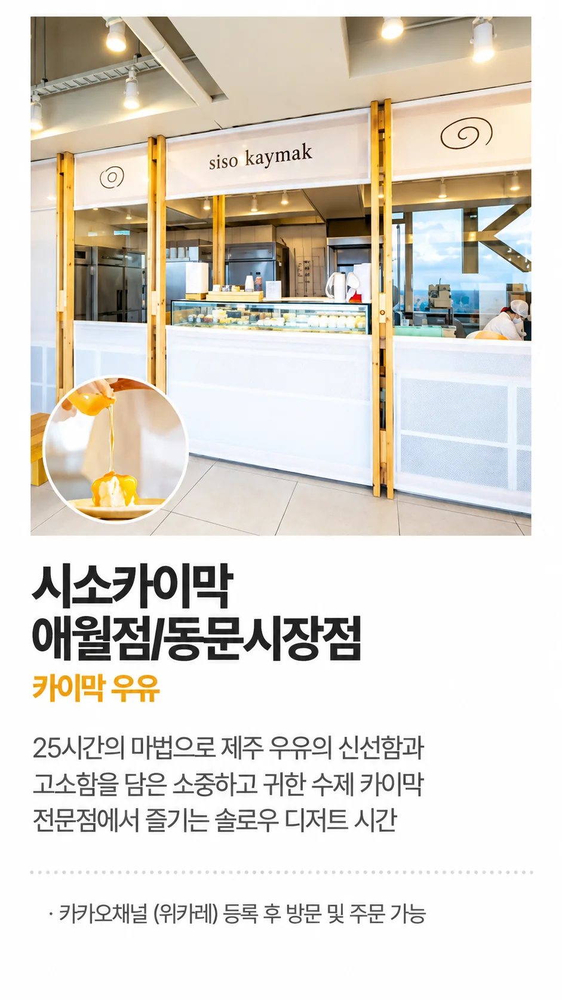
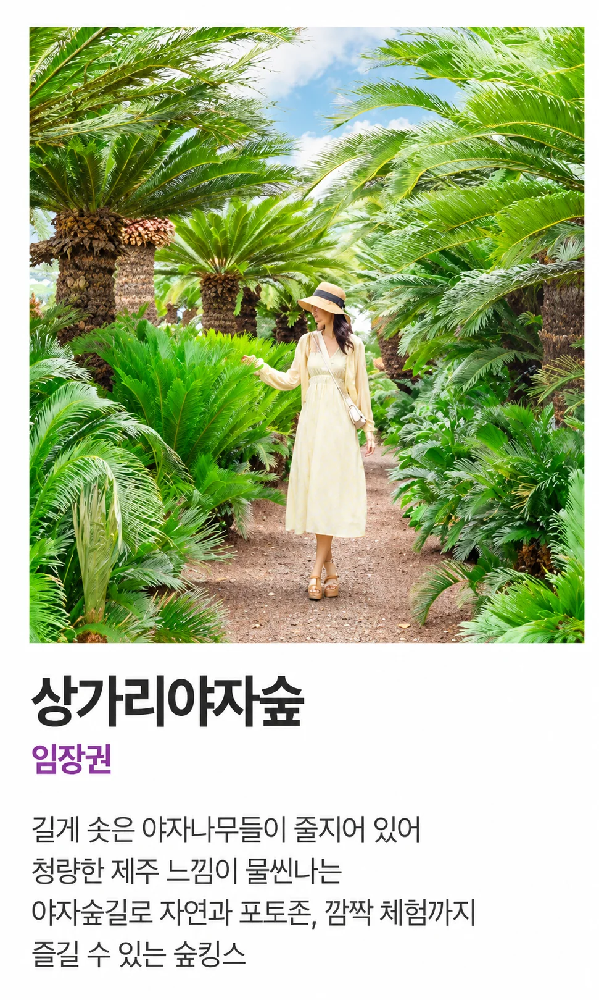

DAY 1 · 1일차
먹거리
놀거리
DAY 1 · 1일차
DAY 2 · 2일차
DAY 3 · 3일차
카페
상세 일정
DAY 1 · 일정 이동 루트제주공항 → 동부 → 서귀포 → 숙소
실제 지도실제 지도와 주행 경로를 불러오는 중입니다.
- 1. 07:30제주공항 도착
07시 30분쯤 공항 도착.
- 2. 07:50짐 수령 · 렌터카 출발
짐을 받은 뒤 렌터카를 타고 출발.
- 3. 아침먹돌고기국수 제주본점
첫 식사 후 동쪽 일정 시작.
- 4. 오전사려니숲길
숲길 산책 및 구경.
- 5. 오전제주 스카이워터쇼
스카이워터쇼 관람. 예약 필요 여부 확인 예정.
- 6. 오전다이나믹메이즈 제주
체험 일정. 지인을 통해 무료 입장 가능 여부 확인.
- 7. 점심온평바다한그릇 성산본점
점심 식사.
- 8. 오후뷰 제주하늘
ATV + 승마 체험. 예약 필요 여부 확인 예정.
- 9. 오후천지연폭포
폭포 관람.
- 10. 오후산방산 탄산온천
온천 이용.
- 11. 저녁사계흑돼지
저녁 식사.
- 12. 숙박바인스테이
숙소로 이동 후 1일차 마무리.
DAY 2 · 일정 이동 루트애월 · 한림 · 서쪽 순환
실제 지도실제 지도와 주행 경로를 불러오는 중입니다.
- 1. 09:00바인스테이
기상 · 바인스테이에서 2일차 일정 출발.
- 2. 아침문개어멍
아침 식사.
- 3. 디저트시소 카이막 애월점
카이막 디저트.
- 4. 오전도치돌알파카목장
알파카목장 구경.
- 5. 12:009.81 파크 제주
카트 체험 · 12시 예약.
- 6. 오후하늘여행 행글라이더체험장
행글라이더 체험 · 운영시간 및 예약 가능 여부는 방문 전 확인.
- 7. 15:00은하 요가
가연이와 차담 요가 수업.
- 8. 점심성아시
해물뚝배기 식사.
- 9. 카페호텔 샌드
카페 + 디저트.
- 10. 포장우무 푸딩
푸딩 포장.
- 11. 오후곽지해수욕장
해변 구경.
- 12. 저녁애월 갈치 암행어사
저녁 식사.
- 13. 야경해지개
카페 + 야경.
- 14. 마무리바인스테이 · 숙소 복귀
2일차 일정 종료.
DAY 3 · 일정 이동 루트서쪽 → 북동부 → 제주시 → 제주공항
실제 지도실제 지도와 주행 경로를 불러오는 중입니다.
- 1. 09:00바인스테이
기상 · 바인스테이에서 3일차 일정 출발.
- 2. 오전상가리야자숲
야자숲 구경.
- 3. 아침제주고기국수 모던돔베 공항본점
아침 식사.
- 4. 11:00돈키쥬쥬
동물원 · 11시 예약.
- 5. 오전본초족욕
족욕 체험.
- 6. 오전닭머르
전망대 구경.
- 7. 간식점점
초당 옥수수 아이스크림.
- 8. 간식링로드
에그타르트.
- 9. 오전함덕해수욕장
해변 구경.
- 10. 점심반디파스타
점심 식사.
- 11. 카페글로시말차
말차.
- 12. 쇼핑동문재래시장
시장 구경. 가능하면 근처 다른 곳에 주차.
- 13. 간식모찌마루
과일 모찌.
- 14. 16:15공항 렌터카 반납
16시 15분까지 반납. 전날 자세한 연락 예정.
- 15. 대기우무 & 우무솝 제주공항 출발점
시간이 남으면 들러서 대기.
- 16. 17:15진에어 제주 → 김포
17시 15분 비행기 탑승.
- 17. 18:30김포공항 도착
18시 30분쯤 도착.
- 18. 귀가각자 집으로 이동
여행 종료.
패스 혜택
브이패스 · 제주올패스일정 내 혜택 합계 최소 61,000원 + α
패스 구매비 제외 · 금액 확인 가능 혜택 합계 61,000원 · 본초족욕 기본 이용가와 글로시말차 기본 제공 음료 정상가 등 미확정 가치는 +α
제주투어패스일정 내 혜택 합계 인당 18,500원 + α
패스 구매비 제외 · 뷰 제주하늘 승마 9,000원 + 시소 카이막우유 4,000원 + 상가리야자숲 입장권 5,500원 = 18,500원 · ATV 현장 할인은 +α
브이패스
브이패스 · 제주올패스
업로드 이미지에 표시된 현장 결제·할인 내용 기준
DAY 1
제주 스카이워터쇼공연 관람권

성인 기준 현장가27,000원
제주올패스 이용 시현장 5,000원 결제
할인액22,000원
업로드 이미지 기준 성인 관람권 혜택입니다.
DAY 1
뷰 제주하늘ATV · 제주 오프로드 코스

성인 기준 현장가30,000원
제주올패스 이용 시현장 14,000원 결제
할인액16,000원
만 18세 이상 운전 가능. 현장 조건과 탑승 제한은 이미지의 유의사항을 확인하세요.
DAY 2
도치돌알파카목장입장권

현장가15,000원
제주올패스 이용 시현장 5,000원 결제
할인액10,000원
소인 기준 및 동물 먹이 관련 유의사항은 이미지 안내를 따릅니다.
DAY 2
애월 갈치 암행어사세트 메뉴 할인권

혜택1인 4,000원 할인
이용 횟수고객 1인 1회
적용 메뉴세트 메뉴
단품 메뉴·주류·음료·기념품은 4,000원 할인에서 제외됩니다.
DAY 2
하늘여행 행글라이더체험장행글라이더

성인 기준 현장가15,000원
제주올패스 이용 시현장 6,000원 결제
할인액9,000원
업로드 이미지 기준 40개월 이상 이용 조건이 표시되어 있습니다.
DAY 3
본초족욕족욕

제주올패스 혜택본초족욕 이용
연계 혜택진돼지 10% 할인
금액이미지에 별도 표기 없음
업체 사전 전화 예약 후 이용 가능하며, 구매 2시간 이후부터 이용 가능합니다.
DAY 3
글로시말차말차스트레이트 또는 아메리카노

기본 혜택말차스트레이트 또는 아메리카노
변경 혜택글로시말차라떼 변경 시 2,000원 할인
이용 방식테이크아웃 전용
업로드 이미지에 표시된 메뉴와 변경 혜택 기준입니다.
제주투어패스
제주투어패스
업로드 이미지에 표시된 이용권·추가 혜택 기준
DAY 1
뷰 제주하늘승마 & ATV

승마체험 기준가9,000원
제주투어패스승마체험 포함
인당 절감액9,000원 + ATV 현장 할인
승마 단거리트랙코스 네이버 예약가 9,000원 기준. ATV는 투어패스 고객 현장 할인 혜택이 별도로 적용됩니다.
DAY 2
시소 카이막 애월점카이막우유

카이막우유 판매가4,000원
제주투어패스카이막우유 1병
인당 절감액4,000원
시소 카이막 애월점 카이막우유 1병 가격 4,000원 기준입니다.
DAY 3
상가리야자숲입장권

입장권 판매가5,500원
제주투어패스입장권 포함
인당 절감액5,500원
현재 온라인/예약 입장권 판매가 5,500원 기준으로 산정했습니다.